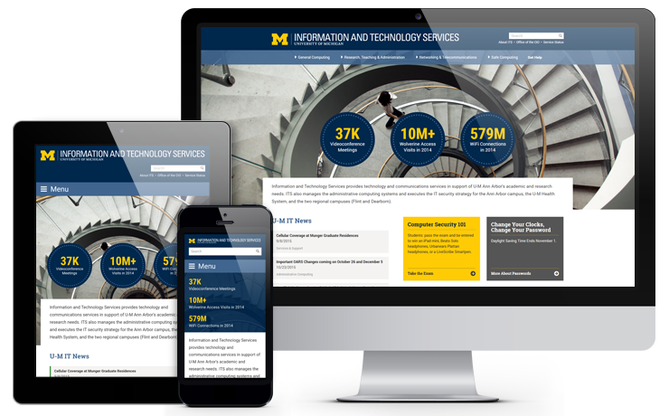

The web, ever in flux, is currently undergoing a dramatic shift. Now fully the hub of people's daily business, expectations surrounding it are rapidly expanding.
The ITS Web Strategy provides a consistent approach to meet these needs across all our web properties.

"Explore more detail on the priorities, check out the tactics we've highlighted for achieving each priority, and contact us with questions, concerns, or for resources."
ITS Mobile/Portal/Web Team
Rather than cover every aspect of web work, this site describes the ITS Web Strategy model, which only focuses on what is necessary to successfully reach customers and users.
The above priorities make it easier for ITS website users to find what they need. By focusing on the priorities and the common goal of usability, those teams and individuals responsible for developing websites and pages can more effectively present information in ways that meet the specific needs of users.